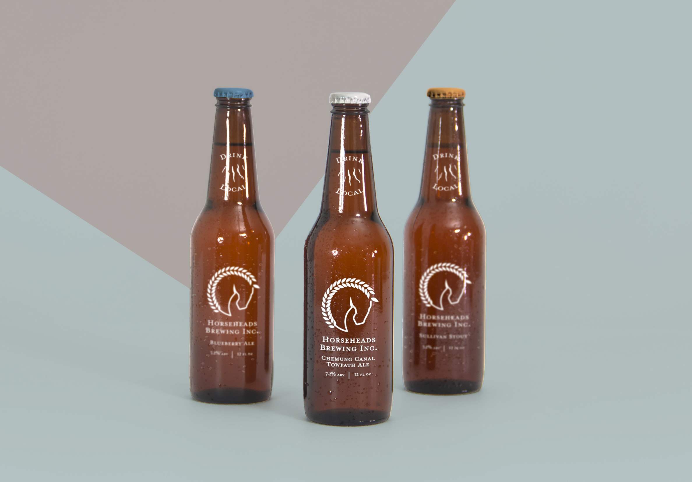
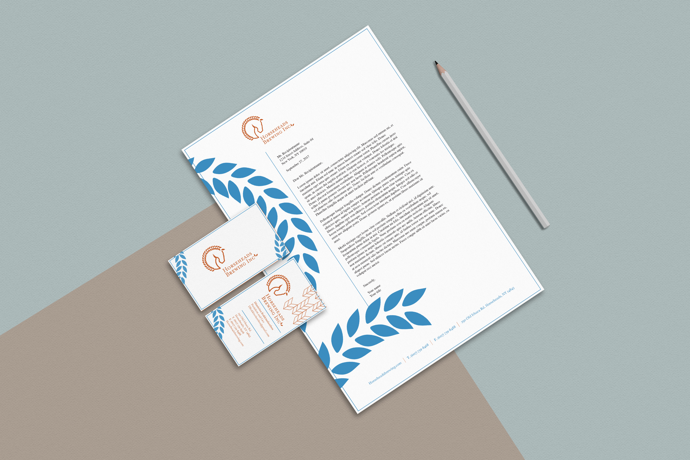

Horse Heads Brewery
Re-branding for a small brewing company called Horseheads brew Inc.. The goal of which was to give the company a more professional and cohesive feel as the previous brand mark was very crude and inconsistent. The mark was made to emulate a horse with wheat as the mane, while not being so overly detailed that it couldn’t be scaled up and down as needed. Multiple touch points were made including business stationary, business cards, a cohesive design for the bottles, and a mock-up for the website.